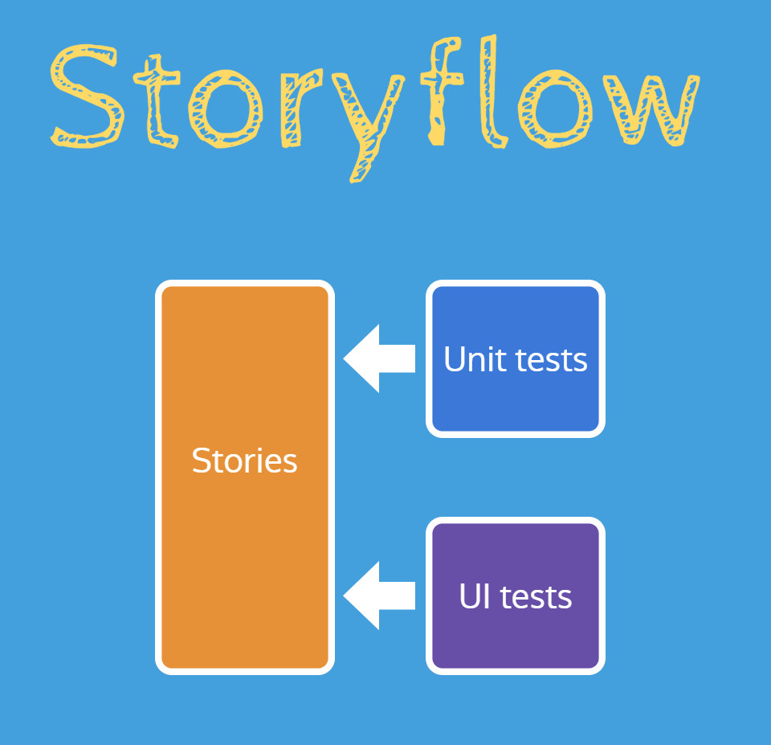

I'm a technologist, speaker, and Pluralsight author and I specialize in building full-stack solutions with a focus on modern web technology and cloud native architecture.

Do you use Storybook? Do you use it to test game engines? Didn't think so! But we do for Excalibur.js and I presented how and why we did it. The genesis for the talk came from a workflow I've been using recently that you can implement in your own projects which I call "Storyflow."
I gave this talk at MN Dev Con on May 4 and again at React Minneapolis on May 21:
The Storybook workflow (ahem, Storyflow) we follow puts Storybook stories at the center of our workflow. The concept is simple in practice: write your unit and functional tests against Storybook instead of importing directly from component files like other workflows.

The "normal" component-based workflow goes like:
MyComponent.jsMyComponent.test.js and import MyComponentMyComponent in use or maybe a few different behaviors/statesBut with Storybook the workflow instead flips the script and centers your testing on isolated components through stories:
MyComponent.jsDefaultState in MyComponent.stories.js and import MyComponentMyComponent.test.js and import DefaultState from storiesDefaultState story in StorybookIt's comes down to a slight shift in thinking. Without Storybook, normally you'd be putting your component into different states within your unit tests. With Storybook, you're already showcasing your component in different states, which makes your unit tests a lot trimmer. Finally, you can add UI testing on top of it to ensure your component works in the browser (without having to manually verify in Storybook).
There are 3 major benefits we've seen from this:
Since your unit and functional tests are run against stories, Storybook becomes the source of truth for any tests. Contrast that to developing without stories, where each test could render components in different states and the only way to know would be to examine each test. Having a published Storybook as a static site makes things a lot more discoverable.
Since tests are written against stories, in order to write more tests... you'll need to write more stories. Having more stories means better documentation (even if it's just code!).
In order to write a solid Storybook story, it has to run in isolation. That means that you will likely lift up more heavy concerns like data fetching, state management, and other stuff higher and have more atomic reusable components. We actually still write stories against our "container" components but it requires a lot more mocking using Storybook decorators.
If you're curious to see this in action, I have a GitHub repository set up you can clone and run and I showcase this workflow within the video above.
You can view a working demo on CodeSandbox using the repository!
Let me know in the comments if you've used this workflow and how it's been working for you!
No spam and I usually send a newsletter once a quarter with content you won't see on the blog.